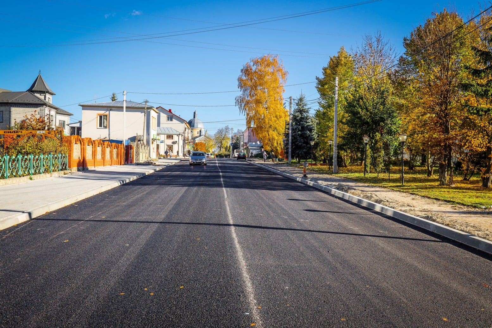

Привіт мене звати Богдан. Мені 17 років, я родом із невеличкого міста Скалат, що на Тернопільщині.
 Головна вулиця міста{kind=link}
Значну частину свого життя я прожив саме в цьому місті. Після закінченя школи я переїхав в місто Зборів, де продовжив своє навчання(навчаюсь до сьогоднішніх днів).
Хоббі та зацікавлення
Я звичайний хлопець XXI-ст., тому які ж в мене можуть бути хоббі чи зацікавлення?) Тому, як і
усі, я люблю пограти в різні ігри та дивитись різні фільми, серіали та аніме...
У вільний час
можу грати з друзями у волейбол(улюблений вид спорту!) також люблю подорожувати по різних
цікавих місцях України.
- Кам'янець-Подільська фортеця
- Хотинська фортеця
- Тарасова гора
- Меджибівський замок
- Збараський замок
- Замок Паланок
- Софіївський парк та інші
Контент мейкерство
Знайомство з цим в мене почалось у 2016 році, в цей час я створив свій перший канал, на якому я викладав різноманітні відео на тему розваги(канал був видалений). Вже в 2017 році я почав цікавитись розробкою ігор для телефонів, тому почав вчити конструктор для ігор - Sketchware і присвятив свій канал цій тиматиці, але далі пішло щось не так...
А вже на початку літа 2021 року створив новий канал, на якому проходжу ігри(станом на 2022 рік припинив вести канал через війну). Також спробував транслювати на Twich. Але це увінчалось провалом, тому я залишився на YouTube.
Знайомство з ІТ
У 2019 році я почав вчити верстку, а наприкінці 2020 року почав вчити Python з цього моменту можна й сказати, що моє життя стиснулося з ІТ. Всі проєкти, над якими я працюю, заходяться на сторінці Проєкти
Переклад манги
В 2021 році я почав перкладати мангу, першою ж мангою була "The Boy Who Became a Cat" - це була манга на вісім сторінок, але коли я її переклав, я відчував себе героєм! Після цього пішла моя дорога перекладача, а всю мангу, яку переклав, ви можете переглянути у вкладці Манга